Next: singleion - a Crystal Up: The Hamiltonian Previous: Rare Earth Ions Contents Index
For some rare earth ions and for transition metals or actinides it is necessary to include more singleion ion states with differen L,S into the calculation. This can be done in intermediate coupling using the module ic1ion, which explicitely includes electrostatic and spin orbit interactions for each ion:
Here 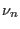,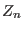 and 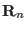 denote the number of electrons, the charge of the nucleus
and the position
of the ion number  ,respectively, for each electron being
the momentum, 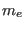 the mass, the charge and
,respectively, for each electron being
the momentum, 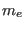 the mass, the charge and  the location.
Spin orbit coupling is written in terms of the orbital momentum and
spin of the individual electrons. The
Zeman interaction and two ion interaction are written in terms of
the (inverse) total spin 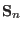 and (inverse) total orbital momentum 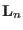
of ion number
the location.
Spin orbit coupling is written in terms of the orbital momentum and
spin of the individual electrons. The
Zeman interaction and two ion interaction are written in terms of
the (inverse) total spin 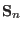 and (inverse) total orbital momentum 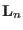
of ion number  . The crystal field in intermediate coupling is written
in terms of Wybourne parameters 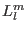 and Wybourne operators 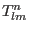, operator equivalents
of real valued
spherical harmonic functions
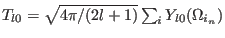,
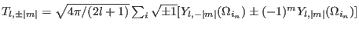 for the ion
. The crystal field in intermediate coupling is written
in terms of Wybourne parameters 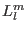 and Wybourne operators 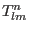, operator equivalents
of real valued
spherical harmonic functions
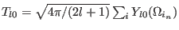,
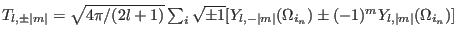 for the ion  ,
for details on crystal field parameter
conventions see appendix E.
,
for details on crystal field parameter
conventions see appendix E.